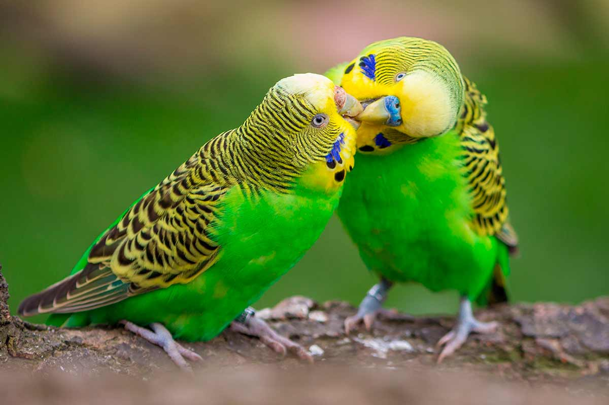
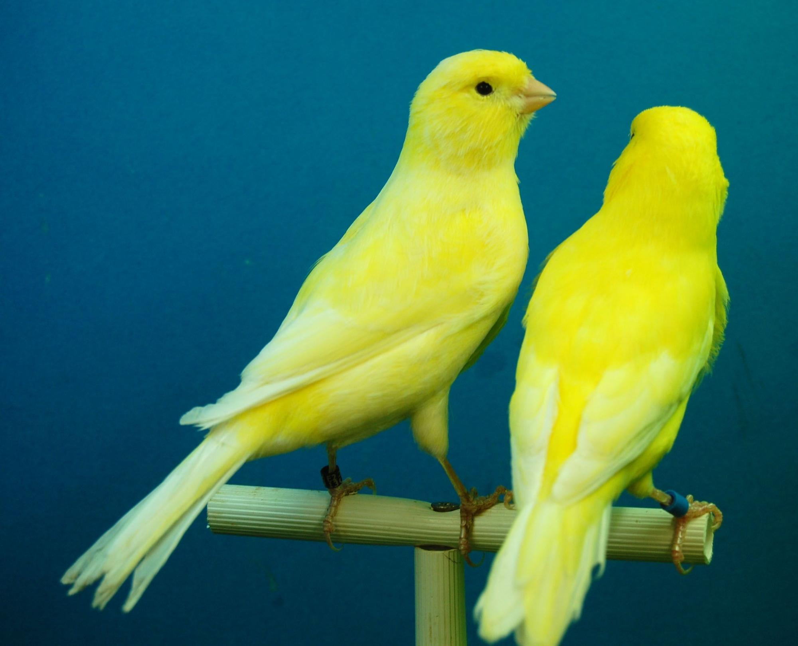
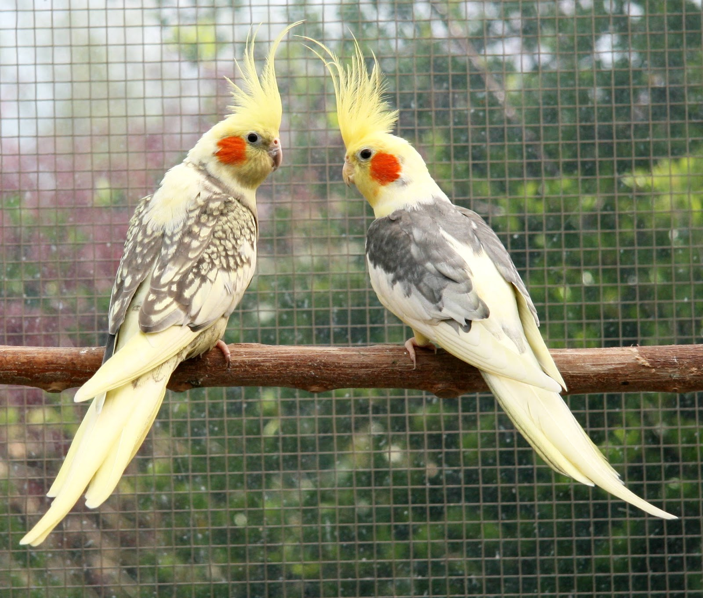
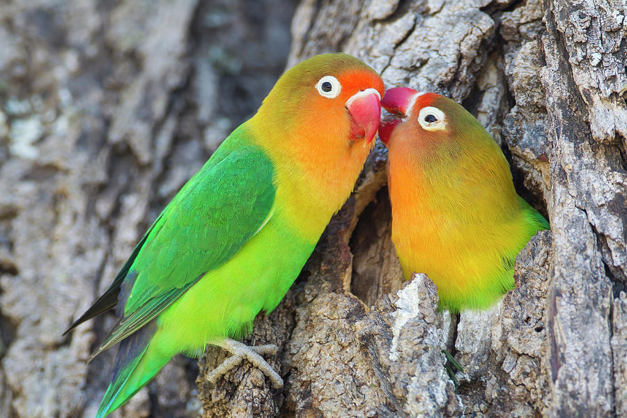
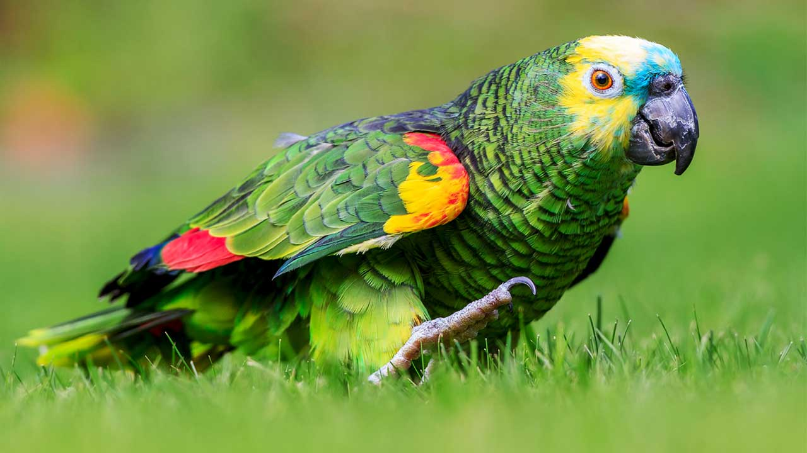

Informações sobre pássaros
Aqui estão algumas espécies comuns de pássaros mantidos como animais de estimação e os cuidados necessários para cada uma delas.
Espécies de pássaros
-
Periquito-australiano (Melopsittacus undulatus)
Pequenos, coloridos e muito populares como pets. São inteligentes, brincalhões e gostam de interagir.
- Alimentação: Ração balanceada para periquitos, sementes e frutas/vegetais frescos.
- Interação: preciso de interação diária para evitar solidão e tédio.
- Espaço: Uma gaiola espaçosa e segura, além de brinquedos e poleiros para treinar o bico e as patas.
Canário (Serinus canaria domestica)
Conhecidos por seu canto melodioso, os canários são pequenos e de cores vibrantes, como amarelo, verde e laranja.
- Alimentação: Ração específica para canários, sementes e pequenos pedaços de frutas.
- Higiene: Mantenha a gaiola limpa e forneça água fresca diariamente.
- Estimulação: Canários gostam de voar dentro da gaiola, por isso é essencial um espaço adequado.
Calopsita (Nymphicus hollandicus)
Inteligentes, amigáveis e capazes de imitar sons, as calopsitas são muito sociais e gostam de interagir com humanos.
- Alimentação: Ração incluída, frutas e verduras frescas.
- Companhia: Precisam de atenção diária e se beneficiam de brinquedos que estimulam o intelecto.
- Espaço: Gaiola grande e tempo fora da gaiola para voar e se exercitar.
Agapornis (Lovebirds)
Pássaros pequenos, coloridos e sociais. Eles formam fortes laços com seus companheiros (inclusive humanos) e são conhecidos como "pássaros do amor".
- Alimentação: Sementes, frutas frescas e ração para agapornis.
- Companhia: Preferem viver em pares e precisam de socialização frequente.
- Espaço: Gaiolas espaçosas com brinquedos e poleiros para exercícios e brincadeiras.
Papagaio (Amazona spp.)
Pássaros maiores, extremamente inteligentes e capazes de imitar palavras e frases. São carismáticos e formam fortes vínculos com seus donos.
- Alimentação: Ração específica para papagaios, além de frutas, legumes e sementes.
- Interação: Precisam de muita interação e estimulação mental para evitar tédio e comportamento destrutivo.
- Espaço: Gaiolas grandes e tempo fora da gaiola para voar e explorar.
Cuidados gerais para pássaros de estimação
- Alimentação balanceada: Fornecer ração de qualidade adequada para cada espécie, complementada com frutas e vegetais frescos.
- Água fresca: roque a água diariamente para mantê-la limpa e acessível.
- Higiene da gaiola: Mantenha a gaiola sempre limpa, trocando o forro regularmente e higienizando comedouros e bebedouros.
- Estimulação e brinquedos: Brinquedos, poleiros e espelhos ajudam a entreter os pássaros, evitando o estresse.
- Atenção e socialização: Muitos pássaros são sociais e precisam de interação diária para se manterem felizes e seguros.
- Consultas veterinárias: Visitas regulares ao veterinário especializado em aves para monitorar a saúde e prevenir doenças comuns.
Com esses cuidados, os pássaros podem ter uma vida longa e saudável, proporcionando companhia e alegria para seus tutores.